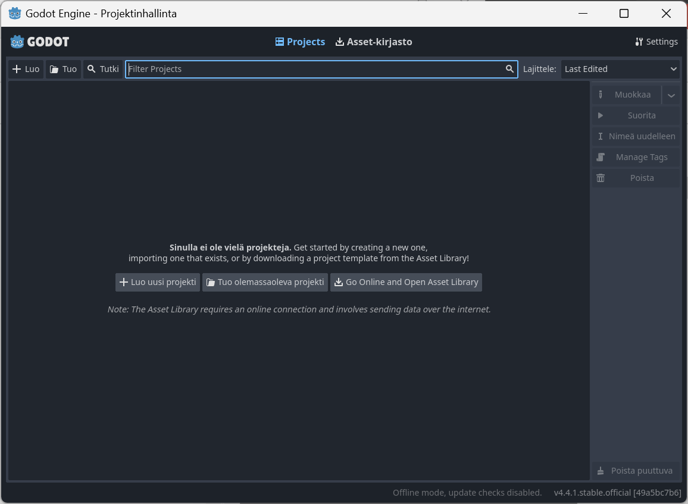
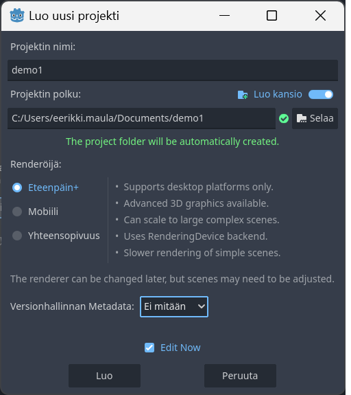

Godot Engine
Yleistä
Godot on ilmainen pelimoottori jonka avulla voidaan luoda 2D- tai 3D-pelejä. Kehitysympäristön käyttö on melko helppo oppia ja ohjelmointi tapahtuu GDScriptin avulla.
Käyttööonotto
Lataa viimeisin versio Godot Enginestä itsellesi (https://godotengine.org/download)
Kehitysympräistön käyttö
Uusi projekti
Valitse Luo uusi projekti

Anna projektille järkevä nimi, valitse kohdehakemistoksi GitHub-reposi. Valitse pois käytöstä versionhallinnan metatieto.
